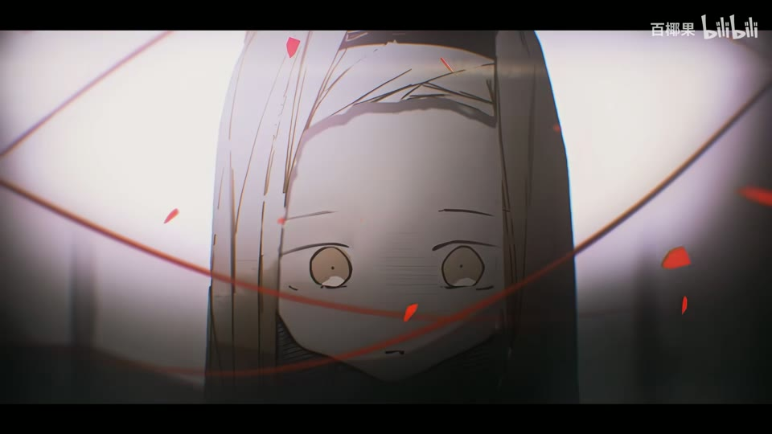

← 案例图谱H16 / 主要视觉研究样本
章鱼噼的原罪【bilibili创作大赛/风华回战2023/静止系MAD】
百椰果 · 89.8万播放快照 · ≥10万 · B站原作 ↗
漫画走廊的连续推进可以形成叙事压力。分层、门框和前景遮挡应共同引导观看，而非按每次位置变化计新镜。

约10.400秒 · 案例代表帧从画面里找依据
这一例先看什么
漫画照片、破碎切片、弯曲纸面、时钟/环轨与粒子字卡多层组织，前景红字和景深区分空间。
审美判断
主面孔、眼形框、次数牌和黑底短句有主次，红色用于强调；深暗段局部聚光而非所有区域都应读到。
迁移到自己的题材
漫画改编、人物回忆、纪念、故事提案、海报动态化、低动作但高情绪密度的段落。
教学提问：前景、中景、背景分别是什么？如果镜头移动，原图未画出的部分由谁补齐？
带画面的分析单元
图像标出取样时间，对应观察中的关键状态。单帧不能独立证明运动，连续性请结合摘录。表达作用与应用场景是教学解读，复现路线是建议，不是原作者工程还原。
分析单元 01 / 4—12秒
眼形遮罩／红色碎片／漫画人物分层
实际观察
眼睛轮廓包围人物，随后出现红色破片与近景人物上的细红线。
表达作用（教学解读）
用运动方向、尺度和密度建立空气、空间或情绪；装饰层应服务焦点。
具体应用场景
回忆、季节、梦幻、寒冷、散场、能量爆发、文本聚散。
复现建议（非原作者工程还原）
人物和漫画背景拆层，眼形路径作遮罩，碎片多边形位移，线条描边与发光。
直出判断：基础机制容易；细致抠图与构图需要素材整理
常见误用：平均铺满；近远粒子大小与模糊无差别；粒子挡脸；用程序火星冒充纪实拍摄。
分析单元 02 / 28—32秒
环绕排字／图形标志／黑底留白
实际观察
章鱼图形与问号居中，红字分布周围；概览确认版式，未证明各字运动轨迹。
表达作用（教学解读）
把阅读顺序变成观看顺序；用字重、位置与停留表达强调、犹豫或压迫。
具体应用场景
观点短片、歌词视觉、人物宣言、章节、情绪高潮；先决定哪些词必须读懂，哪些只是纹理。
复现建议（非原作者工程还原）
文字层沿环形分布，位置和旋转关键帧，中心图形单独控制。
直出判断：容易
常见误用：每个字都弹跳、整句停留不足、所有文字同时争主位。严肃叙事里无理由的回弹会削弱重量。
分析单元 03 / 48—64秒
次数计数牌／红墨飞溅／漫画纹理叠入人物
实际观察
48秒白色大字显示次数，背后漫画与红色墨迹；64秒人物轮廓内出现漫画纹理。单帧不能证明数字递增。
表达作用（教学解读）
用规则、选择与反馈组织关系，让抽象状态可被看见。
具体应用场景
人物关系、搜索、等待、推理、产品功能解释、系统压力；数值需要真实含义或明确虚构设定。
复现建议（非原作者工程还原）
数字文本、墨迹遮罩、人物蒙版与纹理双重曝光合成。
直出判断：计数和遮罩容易；蒙版素材需准备
常见误用：假数据制造伪解释；辅助文字太暗；每个窗口同时运动；手机界面只是装饰外壳。
分析单元 04 / 92—96秒
焦边撕纸遮罩／火星／眼形画框
实际观察
章鱼画面边缘为不规则焦黑边并有橙色亮点，随后被眼形边框包围。
表达作用（教学解读）
以短寿命粒子强调接触、爆发与运动方向，帮助观众辨认材质和事件时点。
具体应用场景
兵器或器械碰撞、机械摩擦、能量爆发、运动接触。先确定接触点、方向、遮挡和寿命；纪实火花应保留摄影来源。
复现建议（非原作者工程还原）
噪声阈值驱动不规则遮罩，边缘加暖色辉光，叠加少量粒子。
直出判断：规则化基础版容易
常见误用：平均铺满；近远粒子大小与模糊无差别；粒子挡脸；用程序火星冒充纪实拍摄。
分析单元 05 / 99.8—101.8秒
轮廓电光／横向镜头光晕／冲击变焦转场
实际观察
同一人物与大号轮廓在多次模糊和锐化间闪动；100.976秒出现圆环，101.059秒亮闪，之后拉成长条模糊进入下一幅画面。
表达作用（教学解读）
用少量形状、方向和重复建立性格，让图形与人物一起表达轻盈、秩序或紧张。
具体应用场景
青春、角色介绍、音乐视觉、活动包装、清楚的图形风格。
复现建议（非原作者工程还原）
轮廓路径发光、横向光条、缩放模糊、曝光关键帧，亮闪处替换画面。
直出判断：基础版容易，复杂轮廓需设计
常见误用：形状种类与颜色都无限增加；图形仅为填空；不顾人物视线与轮廓。
分析单元 06 / 128—132秒
碎玻璃照片／弯曲漫画纸面
实际观察
人物碎片像玻璃分割漂浮，随后漫画纸面向球面或隧道弯曲。仅凭画面不能确定使用3D软件。
表达作用（教学解读）
把画面变成可触摸的记忆或记录；纸边、阴影与展示顺序可以表现珍惜、拼凑或碎裂。
具体应用场景
回忆、青春、艺术创作、旅行手记、人物档案、纪念短片。
复现建议（非原作者工程还原）
切片遮罩加位移和旋转；纸面用网格变形或贴图曲面与相机。
直出判断：规则切片容易；连续透视变形需调试
常见误用：所有纸张纹理一样重；阴影方向不一致；折页遮挡错误；照片墙只有数量而没有观看顺序。
分析单元 07 / 146.6—148.6秒
漫画圆筒走廊／红字前景擦过／径向运动模糊
实际观察
漫画对白面板连续横向滑过并带弯曲透视，红色大形体从前景经过。148.523秒才转为黑场；大量变化来自连续运动。
表达作用（教学解读）
将平面关系变成有前后层次的观看空间；小幅运动可以放大情绪。
具体应用场景
静止画MAD、回忆、图像故事、海报动态化、人物介绍。
复现建议（非原作者工程还原）
多张漫画板贴在弯曲空间或透视网格上，移动相机或面板；前景字层穿过镜头，加方向模糊。
直出判断：基础走廊可程序生成；高质量透视、层次与排字需逐镜调试
常见误用：所有层同速或反向乱动；人物像纸板；补洞不完整；视角变化超出原画信息。
分析单元 08 / 160—192秒
巨型描边字／时钟齿轮拼贴／悬浮卡片／粒子字卡
实际观察
描边大字在人物后，时钟齿轮叠层，倾斜卡片与细曲线形成空间，黑场粒子托住白字。
表达作用（教学解读）
把阅读顺序变成观看顺序；用字重、位置与停留表达强调、犹豫或压迫。
具体应用场景
观点短片、歌词视觉、人物宣言、章节、情绪高潮；先决定哪些词必须读懂，哪些只是纹理。
复现建议（非原作者工程还原）
文字描边、人物遮罩、齿轮旋转、卡片透视和粒子层分别合成。
直出判断：基础元素容易，完整美术与空间关系有制作量
常见误用：每个字都弹跳、整句停留不足、所有文字同时争主位。严肃叙事里无理由的回弹会削弱重量。
用连续画面核对
保留原研究的多段局部摘录。片段含音轨不代表已听审；本资料不评价音乐卡点或对白节奏。
短时变化怎样理解
146.6–148.6秒漫画走廊与红字连续滑动，148.523秒才见黑场；不把经过的每块漫画板当切镜。冲击变焦与亮闪同理分开。
把镜头连接、版式更新、局部图层变化和镜内运动分开记录。所查窗口是下限，不是全片平均或AI／人工排名。
原始逐窗记录 →这次练习的约束
一张有权使用的图片分三层，制作6秒镜头：先只推拉，再加视差，最后加一层前景；比较情绪是否更明确。
先写“我希望观众明白／感到什么”，再选本页的一种手法。完成无效果基础版后再加层；解释新增层带来的收益和代价。
打开练习与复盘表 →来源、观看范围与制作归属
实际检查范围：61张4秒间隔概览及146.6–148.6、99.8–101.8秒密集源帧实际检查；241.152秒1080p23.976源，密集实际间隔约0.083秒。未连续完整观看及听审。
制作线索：百椰果；第一方页面89.8万播放。作者提及剪辑叙事、分镜工作以及使用他人抠图素材，制作路径为作者自述。
边界：作者提及他人抠图素材，素材劳动与UP后期分别保留；规则碎片、眼形遮罩容易，连续曲面透视和精细图层需逐镜调试。
播放快照保存时间（UTC）：2026-10-20T06:05:40.177487+00:00。H30制作方式为推定；同源改编、仿作和转载依原记录标注。
原始案例记录 · 选样表把你的判断留下来
笔记仅尝试保存在本机浏览器；浏览器策略可能限制本地文件存储，重要内容请导出。
沿着同一问题继续阅读
 H35
H35漫画、纸张与记忆
临摹教材的用途是理解规则再做变体。先指出借用了什么，再检查自己更换内容后是否仍讲得清楚。
机制／局限参考9个分析单元
 H43
H43拼贴、色块与风格统一
浅色、细线与大留白仍可清楚；别把缩略图上的淡误判为原画失真。放大看字芯和轮廓，再评价风格。
主要样本8个分析单元
 H42
H42漫画、纸张与记忆
冷灰漫画与紫发绿眼建立人物焦点；窗列和面部反打改变心理距离，雪和纸纹承担的是空气与记忆材质。
主要样本8个分析单元